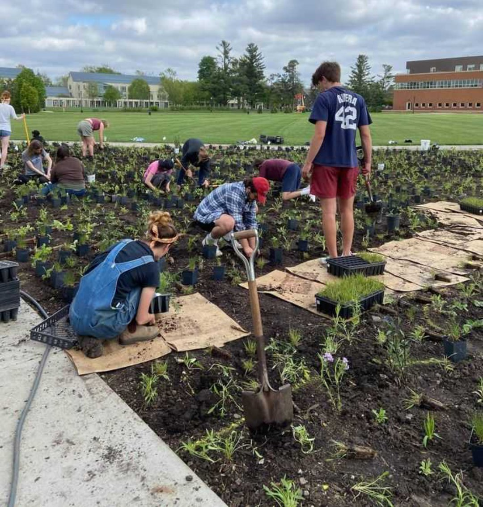
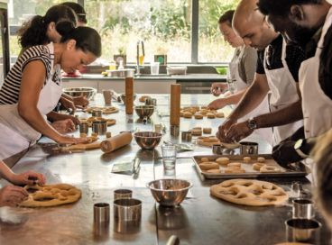

Introduces students to various skills in carpentry, metal works, and other industrial trades, emphasizing hands-on learning.
TVL
Technical-Vocational Livelihood (TVL)
Technical-Vocational Livelihood (TVL) track
is designed to provide students with skills and knowledge in specific technical and vocational fields,
preparing them for immediate employment or for further education and training in a specialized area.
The TVL track aims to equip students with practical skills that are directly applicable to the workforce.
Core Subjects in the TVL Track
Covers the basics of starting and managing a business, providing students with the knowledge needed to pursue entrepreneurship.
Offers students the opportunity to gain real-world experience by working in actual workplace settings related to their chosen technical-vocational specialization.
Offers students the opportunity to gain real-world experience by working in actual workplace settings related to their chosen technical-vocational specialization.
Specialization Strands
Students in the TVL track can choose from various specialization strands based on their interests and career goals. Examples of specialization strands include:Focuses on practical skills related to home management, food preparation, caregiving, and garment making. Information and Communications Technology (ICT): Offers training in computer hardware servicing, animation, programming, and other IT-related skills.
Includes specializations in automotive technology, welding, machining, electrical installation and maintenance, and other industrial trades.
Provides training in agriculture and fisheries, covering topics such as crop production, animal husbandry, aquaculture, and agricultural entrepreneurship.
Offers training for careers in health care, including caregiving, wellness massage, and other allied health services.
National Certificate (NC):
Students who complete the TVL track and pass the assessment by the Technical Education and Skills Development Authority (TESDA) may be eligible to receive a National Certificate (NC) for their chosen specialization. The NC is a recognized certification that validates the competency of individuals in specific technical-vocational skills.
There is a wide range of subjects tackled here, from Applied Economics to Creative Writing to Philippine Politics. These can be ideal for those who are leaning towards the liberal arts especially if you’re interested in communication arts, legal management, or even journalism. You are provided with a rich educational background that you can carry over to your tertiary education.
Career Opportunities
Upon completion of the TVL track, students may pursue various career paths and employment opportunities immediately or after further education and training.
Upon completion of the TVL track, students may pursue various career paths and employment opportunities immediately or after further education and training.
Career opportunities include:
Employment in industries such as construction, automotive, electronics, welding, and other skilled trades.
Starting and managing their own businesses, applying the entrepreneurial skills learned in the track.
Employment in the IT industry, including roles in computer hardware servicing, software development, and technical support.
Careers in caregiving, wellness massage, and other allied health services.
Employment in agriculture, aquaculture, and related fields.
Opportunities in manufacturing and production, utilizing skills in industrial arts.
Employment in service-oriented sectors, such as food and beverage, hospitality, and customer service.
The TVL track provides a practical and skills-oriented education, offering students the opportunity to gain valuable competencies for immediate employment or further education in technical-vocational fields. It aligns with the goal of addressing the demand for skilled workers in various industries.

